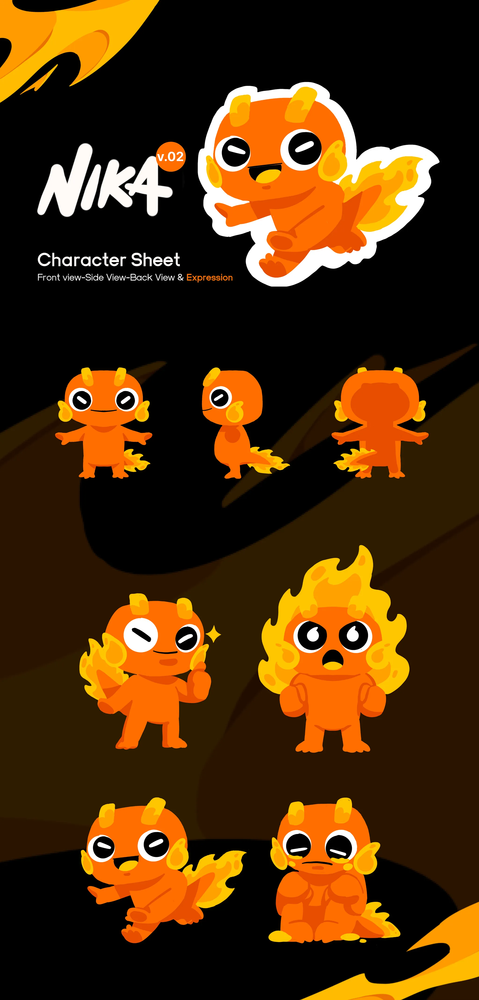

工作台
界面预览
你的灵感工作台
你好，欢迎回来
和 Phoenix AI
一起点燃新想法
你的 AI 工作伙伴，随时为思考、创作和探索提供帮助。

记录每一步灵感
对话历史
你在此预览中的对话会显示在这里。
有据可查的知识
知识库
这里将连接 Harness 的原生资料与检索能力。
知识在需要时出现导入、整理与引用资料的界面将在正式集成时接入。
让想法落地
工具箱
工具和插件会沿用 Harness 的原生功能。
原生工具入口此处只展示品牌外观，暂不改变工具权限或行为。
让工作台更适合你
设置
界面外观查看浅色或深色的 Phoenix 主题
新的灵感，从这里开始